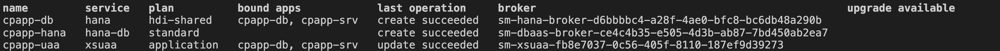
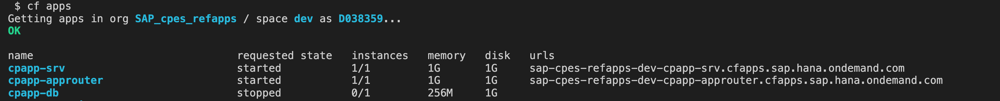
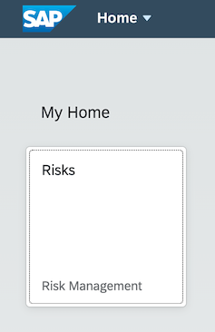

Deploy Your Application Using MultiApps (MTA)
Additional Documentation
This section describes the recommended approach for deployment. As an alternative, you can use the cf push method.
As a result of this section, you've a running application in the cloud based on SAP HANA. The deployment is based on MTA (Multi Target Application, sometimes also called MultiApps) technology. The MTA is an SAP-proprietary way to do deployments that consist of multiple modules. The modules can be implemented in different technologies.
Advantages compared to the cf push method
- a build tool
- automatically created service instances
- service keys
- destinations
- content deployment (HTML5, workflow, ...)
- blue-green deployment
Build and Deploy MultiApps (MTA)
Prerequisites
Install the MTA Build Tool mbt
-
Check if you've already installed the MTA build tool:
mbt --version -
If you don't get back a version number, install the MultiApps Archive Builder:
npm install -g mbt
Install make Tool
Linux and macOS are already shipped with make. This is only relevant for Windows users.`
The make utility is required by the mbt tool. You can download it from the GNU make site:
- Go to http://gnuwin32.sourceforge.net/packages/make.htm.
- Choose the download with the description Complete package, except sources.
- Run the installer.
- Enter Edit the System Environment Variables in the Windows search box (Windows icon in the task bar). The System Properties dialog is opened.
- Choose Environment Variables....
- Choose your
Pathenv variable under User Variables for<your_user_name>and choose Edit. - Choose Browse and navigate to GNU make (usually
C:\Program Files (x86)\GnuWin32\bin). - Click OK to add GNU make to your
Pathenv variable. - Restart VS Code to make the change effective.
Install the MultiApps Cloud Foundry CLI Plugin
The MultiApps plugin is required to deploy an MTA archive. It needs to be available in your Cloud Foundry landscape's Cloud Foundry plugin repository.
-
Log on to your Cloud Foundry landscape.
-
Check if the multiapps plugin is already installed:
cf plugins -
If the multiapps plugin isn’t installed, install it now:
cf install-plugin multiappsIf the process fails, do the installation manually as described here.
Generate MTA Deployment Descriptor (mta.yaml)
The MTA deployment is described in the MTA Deployment Descriptor, a file called mta.yaml.
As the first step, you let CAP generate an initial mta.yaml file. Run the following command from the project root folder:
cds add mta
The cds CLI has generated the file based on your previously created settings in the package.json file.
The mta.yaml file consists of different modules (Cloud Foundry apps) and resources (Cloud Foundry services).
Modules:
cpapp-srv- OData servicecpapp-db-deployer- Deploy CAP schema and data (CSV files) to database
Resources:
The resources are generated from the requires section of cds in the package.json.
cpapp-db- SAP HANA DB HDMI containercpapp-uaa- XSUAA service
The resources are Cloud Foundry service instances that are automatically created and updated during the MTA deployment.
Ensure the Right Service Plan for HDI Container
Different service plans are required for Trial and productive SAP BTP accounts. Make sure that the right plan is set in the mta.yaml file:
resources:
...
- name: cpapp-db
# ------------------------------------------------------------
type: com.sap.xs.hdi-container
parameters:
service: hanatrial
service-plan: hdi-shared
properties:
hdi-service-name: ${service-name}
resources:
...
- name: cpapp-db
# ------------------------------------------------------------
type: com.sap.xs.hdi-container
parameters:
service: hana
service-plan: hdi-shared
properties:
hdi-service-name: ${service-name}
Exclude CSV Files from Deployment
In one of the first steps creating the CAP application, you've added two csv files with test data. These files are required to pre-fill local testing with the SQLite memory. Without the files, the database would be empty after each restart.
Test files should never be deployed to a HANA database as table data.
This can cause the deletion of all files of the affected database table with a change of a data file, even if the data file for the affected table has been removed before. HANA remembers all data files that have ever been deployed to the table and might restore it. Only data files that contain data, which are defined by the application developer and can't be changed by the application should be delivered in this way. Delivering files for tables with customer data already caused data loss in productive scenarios!
To avoid any loss of data, you change the MTA build parameters to remove all the CSV files and the hdbtabledata that is generated by the CAP server out of the CSV files. Add the following lines to the mta.yaml file:
_schema-version: '3.1'
...
build-parameters:
before-all:
- builder: custom
commands:
- npm install --production
- bash -c "cds -v 2>/dev/null >/dev/null || npm install --no-save @sap/cds-dk"
- npx cds build --production
- bash -c 'find gen -type f \( -name '*.csv' -or -name '*.hdbtabledata' \) | xargs rm -f'
Files that should be delivered can be added before the | using this syntax:
! -name <filename>
For example:
- bash -c 'find gen -type f -name '*.csv' ! -name 'CodeList.csv' | xargs rm -f'
Add Authorization and Trust Management Service (XSUAA)
The next step is to add the Authorization and Trust Management service to mta.yaml to allow user login, authorization, and authentication checks.
_schema-version: '3.1'
...
resources:
...
- name: cpapp-uaa
type: org.cloudfoundry.managed-service
parameters:
service: xsuaa
service-plan: application
path: ./xs-security.json
config:
xsappname: 'cpapp-${space}'
tenant-mode: dedicated
role-collections:
- name: 'RiskManager-${space}'
description: Manage Risks
role-template-references:
- $XSAPPNAME.RiskManager
- name: 'RiskViewer-${space}'
description: View Risks
role-template-references:
- $XSAPPNAME.RiskViewer
The configuration for XSUAA is read from the xs-security.json file that was created in XSUAA Security Configuration.
But in the config element, values can be added and overwritten.
The value xsappname gets overwritten with a space-dependent value. The name has to be unique within a subaccount.
This allows multiple deployments of this tutorial in different spaces of the same subaccount. For example, different people of a team that want to try it out and don't want to create a new subaccount for each team member.
For a productive application, the xsappname should be explicitly set to the desired value.
Further, you can add role collections using the xs-security.json file. Since role collections need to be unique in a Subaccount like the xsappname, you can add it here and use the ${space} variable to make them unique like for the xsappname.
Alternatively, role collections can be manually added in the SAP BTP cockpit.
Add UI Application Using the SAP Application Router
Although you can run your application with a UI locally, you're not able to use the UI in the cloud since it's not deployed yet. This is provided by another application (module in the MTA context). This application is a so-called AppRouter application that contains all our static UI files and allows access to the CAP service from the UI.
Create the AppRouter NPM Module
-
Create a folder
approuterwhere you store all AppRouter artifacts and switch to the new folder:mkdir approuter cd approuter -
Initialize
npmin this folder and install the latest version of AppRouter NPM module:npm init --yes npm install @sap/approuterThe functionality of the AppRouter is provided by the
@sap/approuterNPM module. -
Check the required Node.js version for AppRouter.
This is declared in the
package.jsonfile of the AppRouter. You can check it, for example, with this script:cat node_modules/@sap/approuter/package.json | grep '"node"'cat node_modules/@sap/approuter/package.json | findstr '"node"'It outputs something like:
"node": "^12.0.0 || ^14.0.0"In this example AppRouter supports Node.js 12.x.x and 14.x.x versions.
-
Add required Node.js version in
approuter/package.jsonfile.This depends on the supported versions of the AppRouter, like ^12.0.0 in this example:
{ "name": "approuter", ... "engines": { "node": "^12.0.0" } } -
Add the start script for the AppRouter in
approuter/package.jsonfile:{ "name": "approuter", ... "scripts": { "start": "node node_modules/@sap/approuter/approuter.js" } }
AppRouter Configuration
Configure the AppRouter by creating a file approuter/xs-app.json with the following content:
{
"welcomeFile": "/app/launchpage.html",
"authenticationMethod": "route",
"sessionTimeout": 30,
"logout": {
"logoutEndpoint": "/do/logout",
"logoutPage": "/"
},
"routes": [
{
"source": "^/app/(.*)$",
"target": "$1",
"localDir": "resources",
"authenticationType": "xsuaa"
},
{
"source": "^/service/(.*)$",
"destination": "srv-api",
"authenticationType": "xsuaa"
}
]
}
Most importantly, you've to tell the AppRouter how to respond to requests in the routes array:
- The files in the
resourcesfolder will be served for all requests to/app. Later, there’s an explanation how you get the "app" files into this resource folder. - All requests starting with
/servicewill be forwarded to the CAP service based on the URL we configured in the MTA using the destinationsrv_app. Remember, theriskservice is reachable via/service/risk. Further, services are automatically routed as long as they start with/service/as well.
Further, the AppRouter will automatically redirect to the /app/launchpage.html when accessed without a path, which will then serve the file resources/launchpage.html.
Build SAPUI5 Files
The resources for the AppRouter origin come from the app folder. Add another module cpapp-app in mta.yaml to build these resources for use in the AppRouter:
_schema-version: '3.1'
...
modules:
- name: cpapp-app
type: html5
path: app
build-parameters:
builder: custom
commands:
- bash build.sh
supported-platforms: []
build-result: dist
This will call the script build.sh in the app folder and expects the build result in app/dist. By providing an empty list of supported platforms, it’s ensured that this "module" isn't deployed to the cloud. It’s only needed to build the SAPUI5 apps.
Add Build
Add the script app/build.sh to execute the SAPUI5 build:
#!/bin/bash
set -e
cd "$(dirname "$0")"
rm -rf dist
mkdir dist
cp launchpage.html dist
for APP in *; do
if [ -f "$APP/webapp/manifest.json" ]; then
echo "Build $APP"
cd "$APP"
if [ ! -f "package.json" ]; then
npm init --yes
fi
npm install
npm install --save-dev @ui5/cli
if [ ! -f "ui5.yaml" ]; then
cat >ui5.yaml <<EOF
specVersion: "2.1"
type: application
metadata:
name: $APP
EOF
fi
npx ui5 build --dest "../dist/$APP/webapp"
cd ..
fi
done
Each SAPUI5 application needs the module @ui5/cli for the build and a ui5.yaml file. The script creates the file if it doesn't exist. It can be modified if needed.
The SAPUI5 build is then triggered and writes the results into the folder app/dist/<app-folder-name>/webapp.
The webapp folder is part of the design time structure of SAPUI5 and usually doesn't show up at runtime. However, the build script keeps this folder, so that the URLs in the launchpage.html work for the AppRouter and keep working locally.
Add AppRouter Module to mta.yaml
Add the cpapp-approuter module for the AppRouter to the mta.yaml:
_schema-version: '3.1'
...
modules:
...
- name: cpapp-approuter
type: nodejs
path: approuter
requires:
- name: cpapp-uaa
- name: srv-api
group: destinations
properties:
forwardAuthToken: true
strictSSL: true
name: srv-api
url: '~{srv-url}'
build-parameters:
requires:
- name: cpapp-app
artifacts:
- ./*
target-path: resources
The AppRouter takes the SAPUI5 build results from the cpapp-app and puts it in the resources directory. This is where the xs-app.json looks for the files requested for /app/....
The cpapp-uaa binding adds our already existing XSUAA service instance to the AppRouter, which makes login and logout possible. By this, the AppRouter forwards requests with the authentication token (Authorization: Bearer <jwt-token>) to the CAP service. The CAP service then uses it for authentication and authorization checks.
The srv-binding creates an environment variable destinations that contains a JSON array with one object containing the "destination" to the CAP service. This is required to forward requests to the CAP service.
The generated environment variable looks like this:
destinations='[{ "name": "srv-biding", "forwardAuthToken": true, "strictSSL": true, url: "https://..." }]
The URL is taken from the cpapp-srv module that needs to be enhanced to export this information.
Adapt CAP Server Module
Do the following changes for the cpapp-srv module to the mta.yaml:
_schema-version: '3.1'
...
modules:
...
- name: cpapp-srv
type: nodejs
path: gen/srv
requires:
- name: cpapp-db
- name: cpapp-uaa
provides:
- name: srv-api
properties:
srv-url: '${default-url}'
Besides exporting the CAP service's URL as srv-url property, the XSUAA service instance that is required for authentication and authorization checks is added here.
Build, Deploy, and Test mtar File
-
Build the MTA module from the project root folder:
mbt build -t ./This creates a
mtarfilecpapp_1.0.0.mtarin the current folder (option:-t ./).If you get an error
Mapping values are not allowed in this context, make sure to doublecheck spacing of code snippets copied from the previous steps. -
Deploy the module to your current Cloud Foundry space:
cf deploy cpapp_1.0.0.mtar -
After successful deployment, check if all the services have been created:
After successful deployment, you should see the following services in your space:cf services
-
Check if the apps are running:
cf apps
-
Open the AppRouter URL in the browser.
In the screenshot example
bbc6e25btrial-dev-cpapp-approuter.cfapps.eu10.hana.ondemand.com. -
Log on with your SAP user name and password.
You now see the tile with the
Risksapplication. If you choose the tile, the application is started and the content is available.
You receive an error if you try to start the
Risksapplication, because your user doesn't have theRiskReadrole. The required steps are explained in the next module.Tip
You can also deploy a single module using
-m <module-name>command line parameter.